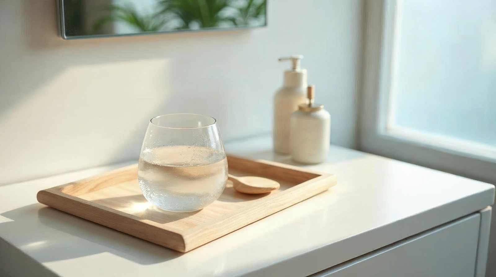
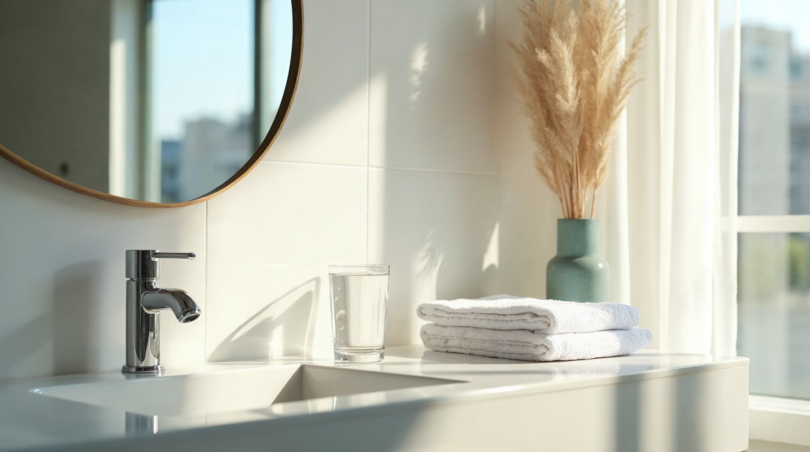
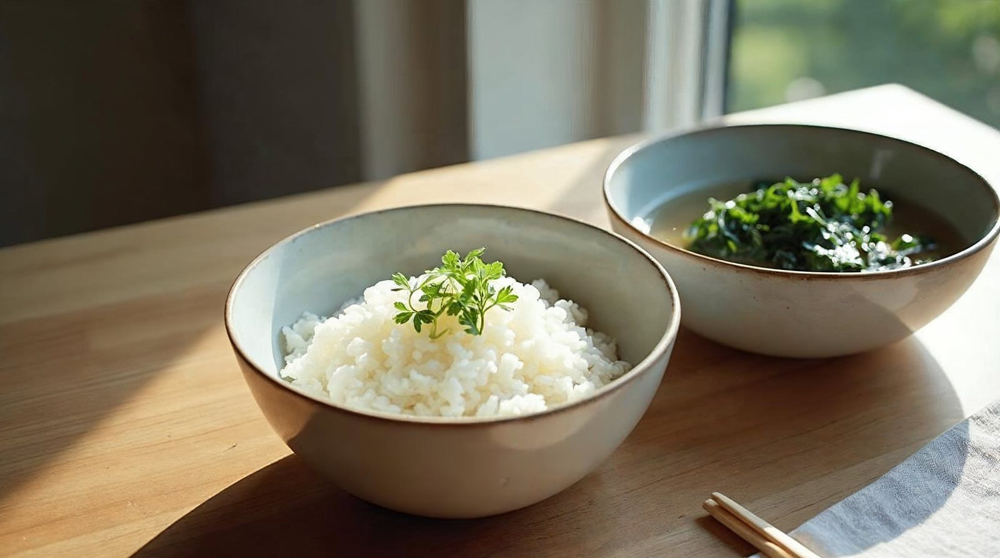
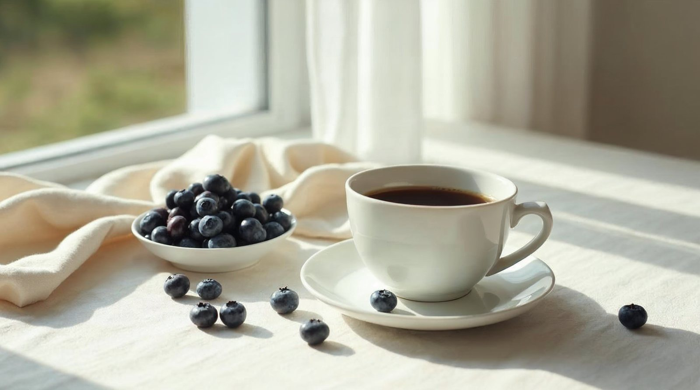
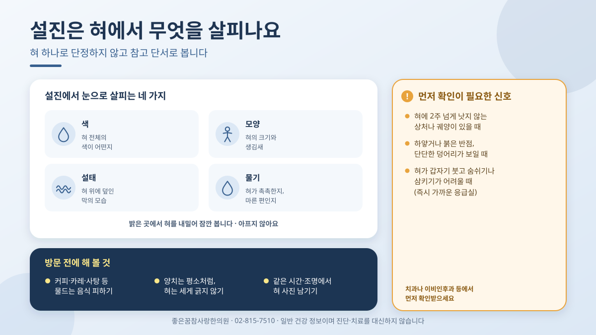

이종호 한의사 감수좋은꿈참사랑한의원 대표원장 (한의사 면허번호 19769)발행 2026-11-23 · 수정 2026-11-26
이 글의 차례
- 왜 혀를 살피나요
- 설진에서 살피는 네 가지
- 자주 하는 오해
- 예를 들면 이런 경우입니다
- 먼저 이렇게 여쭙니다
- 일상에서 먼저 해 볼 수 있는 것
- 스스로 점검해 보세요
- 한의원에서 함께 살필 수 있는 경우
- 혀를 보면 왜 생활 이야기부터 여쭙게 되나요?
- 비슷해 보이는 입안 불편은 어떻게 나눠 보나요?
- 집에서 혀를 비춰 볼 때는 무엇을 기준으로 보나요?
- 한의학에서는 혀의 색을 어떻게 읽나요?
- 설진이 특히 쓸모 있는 때는 언제인가요?
- 혀 모습을 걱정하게 되는 흔한 계기
- 설진과 진맥은 어떻게 맞춰 보나요?
- 다시 오셨을 때 혀는 어떻게 이어서 보나요?
- 이렇게 기록해 오시면 상담이 쉬워집니다
- 며칠 지켜보고, 언제 바로 확인하나요
- 이런 증상은 먼저 확인이 필요합니다
- 함께 읽으면 좋은 글
설진은 혀의 색과 모양, 혀 위의 막(설태), 물기를 눈으로 살펴 몸 상태를 가늠하는 한의학의 기본 진찰 방법입니다. 아프지 않고 시간도 짧으며, 문진과 진맥 같은 다른 진찰과 함께 보는 참고 단서로 씁니다. 혀 모양 하나로 병을 진단하거나 단정하지는 않습니다.
왜 혀를 살피나요
- 혀는 몸 밖에서 바로 볼 수 있는 점막이라 소화, 수분, 열감 같은 몸속 상태의 단서를 얻을 수 있다고 한의학에서는 봅니다.
- 같은 피로나 소화 불편이라도 혀의 색과 물기가 다르면 살펴볼 방향이 달라질 수 있습니다.
- 진료가 이어질 때 혀의 변화를 함께 보면 몸 상태의 흐름을 이야기하기 쉬워집니다.
- 다만 조명, 음식, 약에 따라 달라 보이는 한계가 있어 참고 자료로만 씁니다.
설진에서 살피는 네 가지
- 혀의 색: 옅은 분홍빛이 흔한 모습이며, 더 붉거나 더 옅어 보이는지를 봅니다.
- 혀의 모양: 크기와 두께, 붓기, 가장자리의 이 자국, 가운데 갈라짐을 봅니다.
- 설태: 혀 위의 막이 얇은지 두꺼운지, 흰색인지 누런색인지, 고르게 덮였는지를 봅니다.
- 물기: 혀 표면이 촉촉한지, 말라 있는지를 봅니다.
한의학에서는 이 네 가지를 함께 놓고 소화, 수분, 몸의 온기와 열감 쪽으로 질문을 넓혀 갑니다. 어느 하나만 떼어 결론을 내리지 않는 것이 설진의 기본입니다.

자주 하는 오해
- 혀를 보면 어떤 병인지 바로 안다고 여기기 쉽지만, 설진은 진맥과 문진에 더하는 참고 단서이고 진단을 대신하지 않습니다.
- 진료 전에 혀를 깨끗이 긁어 와야 한다고 생각하기 쉽지만, 세게 긁으면 평소 모습이 가려져 오히려 살피기 어려워집니다.
- 혀 색이 하루만 달라 보여도 큰일이라고 걱정하기 쉽지만, 음식과 잠, 조명에 따라 쉽게 달라 보이므로 며칠의 흐름으로 봅니다.
- 설진은 아프거나 불편한 검사라고 여기기 쉽지만, 밝은 곳에서 혀를 잠깐 내미는 것으로 끝납니다.

예를 들면 이런 경우입니다
- 예를 들어 야근이 잦은 직장인이 아침마다 혀가 하얗게 덮여 있다고 걱정하는 경우, 전날 늦은 야식과 잠든 시각을 먼저 여쭙고, 생활을 며칠 고르게 한 뒤 다시 보는 쪽으로 이야기합니다.
- 예를 들어 수험생이 입이 자주 마르고 혀가 붉어 보인다고 하는 경우, 물 마시는 양과 카페인, 잠의 길이를 함께 확인하고 진맥 소견과 맞춰 봅니다.
- 예를 들어 틀니를 쓰고 약을 여러 가지 드시는 어르신이라면, 틀니와 입마름, 약이 혀 모습에 주는 영향을 먼저 빼고 남는 모습을 단서로 삼습니다.
- 예를 들어 육아로 밤잠이 자주 끊기는 부모가 혀 가장자리에 이 자국이 눈에 띈다고 하는 경우, 붓기와 피로, 식사를 거르는 일이 잦은지 함께 여쭙고 혀 모습은 그 이야기에 더하는 단서로 봅니다.
먼저 이렇게 여쭙니다
- 최근 입안이 텁텁하거나 마르는 느낌이 있나요?
- 식사 뒤 더부룩함이나 속쓰림이 있나요?
- 몸이 차다고 느끼나요, 열감이 있다고 느끼나요?
- 방문 직전에 커피나 색이 진한 음식을 드셨나요?

일상에서 먼저 해 볼 수 있는 것
- 방문 직전에는 커피, 카레, 사탕처럼 혀를 물들이는 음식 피하기
- 양치는 평소처럼 하고 혀를 세게 긁어 내지 않기
- 변화가 궁금하다면 아침 같은 시간, 같은 조명에서 혀 사진 남겨 보기
- 입안이 자주 마른다면 물을 조금씩 자주 마셔 보기
- 혀 사진을 남긴다면 휴대전화 플래시를 끄고 창가의 자연광에서 찍어 보기
스스로 점검해 보세요
- 아침에 일어나면 입안이 텁텁하거나 마른 날이 일주일에 여러 번 있다
- 혀 가장자리에 이가 눌린 듯한 자국이 보인다
- 혀 위의 막이 며칠째 두껍게 느껴진다
- 혀에 따갑거나 쓰라린 곳이 있다
- 식사 뒤 더부룩함이나 속쓰림이 자주 있다
- 커피나 색이 진한 음료를 하루 여러 잔 마신다
- 혀 색이나 모양이 평소와 다르다고 느낀 지 2주가 넘었다
해당하는 항목이 있다면 진료 때 함께 말씀해 주세요. 체크 결과만으로 몸 상태를 판단하지는 않습니다.
한의원에서 함께 살필 수 있는 경우
- 소화가 더디고 입안이 텁텁한 느낌이 이어질 때 식사 습관과 함께 살핍니다.
- 쉽게 피곤하고 몸이 무거운 느낌이 있을 때 잠과 생활 리듬을 함께 여쭙니다.
- 몸이 차거나 열감이 있다고 느낄 때 평소의 온기와 땀 상태를 함께 살핍니다.
설진은 밝은 곳에서 혀를 편하게 내밀어 잠깐 관찰하는 방식입니다. 좋은꿈참사랑한의원에서는 모든 분께 맥부터 짚으며 불편한 점을 여쭙고, 필요하다고 판단될 때 설진을 복진과 함께 참고합니다. 혀 하나로 결론을 내리지 않고 상담 내용과 맞춰 본 뒤 침이나 한약 상담 등 상태에 맞는 방법을 정합니다.
첫 방문에는 원장이 손목의 맥을 짚으며 불편한 점과 시기, 잠·소화·대소변·몸의 온기를 여쭙습니다. 필요하다고 판단되면 혀를 한번 보여 달라고 말씀드려 밝은 곳에서 색과 모양, 설태와 물기를 보고, 배를 눌러 보는 복진을 더하기도 합니다.
이렇게 모은 단서를 함께 놓고 오늘 할 치료와 이유를 먼저 설명드린 뒤 진행하며, 다음 진료에서는 지난번 이야기에 이어 혀 모습과 생활의 변화를 비교합니다.
혀를 보면 왜 생활 이야기부터 여쭙게 되나요?
혀는 하루 사이에도 꽤 달라집니다. 저는 혀에서 눈에 띄는 모습을 보면 그것이 몸속 무엇을 뜻하는지 먼저 말하기보다, 어제 무엇을 드셨고 몇 시에 주무셨는지를 먼저 여쭙습니다. 설태의 두께나 물기는 전날의 식사와 잠에 따라 금방 움직이기 때문입니다.
예를 들어 늦은 밤 짠 음식을 드시고 물을 많이 마신 다음 날에는 혀가 조금 부어 보이고 가장자리 자국이 짙어 보일 수 있습니다. 하루 종일 말을 많이 하고 물을 거의 못 마신 날에는 혀 표면이 말라 보입니다. 이런 날의 혀를 평소 모습으로 오해하지 않으려고 생활 이야기를 먼저 듣습니다.
그래서 혀를 보는 시간은 짧아도 그 앞뒤로 나누는 이야기는 조금 길어질 수 있습니다. 혀 모습은 대화를 여는 질문이고, 답은 말씀해 주시는 생활과 맥에서 함께 찾는다고 생각하시면 마음이 편합니다.
비슷해 보이는 입안 불편은 어떻게 나눠 보나요?
혀가 신경 쓰여 오시는 분 가운데에는 설진에서 보는 모습과 결이 다른 불편을 가진 분도 계십니다. 이럴 때는 어느 진료가 먼저 맞는지부터 함께 정리합니다.
- 혀나 입안이 따갑고 화끈거리는 느낌이 주된 불편이라면, 겉모습보다 감각의 변화가 중심이라 따로 나눠 살핍니다.
- 이가 깨져 날카롭거나 틀니가 맞지 않아 혀 한쪽이 자꾸 쓸린다면 치과 확인이 먼저입니다.
- 코가 막혀 입으로 숨 쉬는 날이 많다면 입마름과 설태 변화가 코 상태와 이어져 있는지 함께 봅니다.
- 새로 시작한 약이 있다면 혀 색이나 입마름이 약과 관련 있는지 처방한 곳에도 여쭤 보시길 권합니다.
이렇게 나눠 보면 혀 모습을 몸 전체의 단서로 볼 경우와 입안 자체를 먼저 살필 경우가 구분됩니다. 어느 쪽인지 애매하다면 진료 때 편하게 말씀해 주세요.
입안 불편과 혀 겉모습이 함께 있을 때도 있습니다. 예를 들어 입이 자주 마르고 혀가 붉어 보이며 밤에 자주 깬다는 말씀이 함께 있다면, 입안만 보지 않고 잠과 몸의 열감까지 이어서 살핍니다. 여러 이야기가 한쪽으로 모일 때 설진은 더 쓸모 있는 단서가 됩니다.
집에서 혀를 비춰 볼 때는 무엇을 기준으로 보나요?
집에서 혀를 보실 때는 좋다, 나쁘다를 가리기보다 평소와 비교해 어떤지를 보시면 충분합니다. 그러려면 기준이 될 내 혀의 평소 모습을 먼저 알아 두어야 합니다.
- 아침에 일어나 물로 입을 한 번 헹군 뒤 같은 거울 앞에서 봅니다.
- 혀를 힘 빼고 내밀어 3~4초만 보고 넣습니다. 오래 내밀면 혀가 붉어집니다.
- 색은 혀끝, 가운데, 가장자리를 나눠서 봅니다.
- 설태는 막 아래로 혀 바탕이 비치는지, 가려지는지만 보셔도 됩니다.
일주일쯤 이렇게 보시면 평소 모습이 어느 정도인지 감이 생깁니다. 그 뒤 달라 보이는 날이 있으면 전날 생활을 떠올려 보시고, 같은 모습이 이어지면 기록과 함께 가져와 주세요.
한의학에서는 혀의 색을 어떻게 읽나요?
한의학에서는 혀 색이 옅어 보이면 기운이 부족하거나 몸이 찬 쪽을, 붉어 보이면 열감이 있는 쪽을 먼저 떠올려 질문을 이어 갑니다. 다만 이것은 질문의 방향일 뿐, 그 자체로 결론이 아닙니다.
예를 들어 혀가 옅어 보여도 손발이 따뜻하고 식사와 잠이 편하다면 저는 그 모습에 큰 무게를 두지 않습니다. 혀가 붉어 보여도 방금 뜨거운 차를 드셨다면 그 영향부터 뺍니다. 혀 색은 말씀과 맥이 같은 쪽을 가리킬 때 비로소 의미 있는 단서가 됩니다.
혀끝, 가운데, 뿌리처럼 부위에 따라 몸의 어느 쪽과 이어 보는 해석도 전해 내려오지만, 이 역시 참고로만 씁니다. 부위 하나의 색으로 특정 장기를 단정하는 설명을 들으셨다면 너무 마음에 담아 두지 않으셔도 됩니다.
설진이 특히 쓸모 있는 때는 언제인가요?
- 말로 표현하기 어려운 몸 상태를 이야기할 실마리가 필요할 때
- 같은 피로라도 열감 쪽인지 찬 쪽인지 방향을 가늠해 볼 때
- 치료와 생활 변화를 이어 가며 흐름을 비교할 때
반대로 혀만 보고 병이 있는지 없는지를 가리는 데에는 설진을 쓰지 않습니다. 그런 판단이 필요할 때는 다른 검사와 진료를 권하는 것이 맞다고 생각합니다.
혀 모습을 걱정하게 되는 흔한 계기
- 인터넷에서 본 혀 사진과 내 혀가 달라 보여서
- 가족에게 혀가 하얗다는 말을 들어서
- 양치하다 우연히 갈라진 자국을 발견해서
- 입냄새가 신경 쓰여 거울을 자주 보다가
이런 계기로 혀를 들여다보기 시작하면 평소엔 지나치던 모습까지 눈에 들어와 걱정이 커지기 쉽습니다. 무엇이 계기였는지 말씀해 주시면, 마음에 걸리는 부분부터 풀어 가며 혀를 함께 봅니다. 걱정을 말로 꺼내는 것만으로 한결 가벼워졌다는 분도 많습니다.
설진과 진맥은 어떻게 맞춰 보나요?
진맥은 손끝으로 느끼는 몸의 흐름이고, 설진은 눈으로 보는 겉모습입니다. 두 가지가 같은 쪽을 가리키면 저는 그 방향에 조금 더 무게를 둡니다. 예를 들어 맥이 가라앉고 힘이 약한데 혀도 옅고 촉촉하다면, 몸의 온기와 피로 쪽 질문을 더 자세히 이어 갑니다.
반대로 맥과 혀가 서로 다른 이야기를 하는 것처럼 보일 때도 있습니다. 그럴 때는 어느 한쪽을 버리지 않고, 최근 생활에서 그 차이를 설명할 만한 일이 있었는지 여쭙습니다. 늦게까지 깨어 있었거나 식사를 걸렀다는 말씀 하나로 실마리가 풀리는 일이 많습니다.
필요하다고 판단되면 배를 눌러 보는 복진을 더해 소화 쪽 단서를 하나 더 얻기도 합니다. 이렇게 여러 단서를 겹쳐 볼수록 혀 하나에 기대는 무게는 줄어듭니다.
다시 오셨을 때 혀는 어떻게 이어서 보나요?
저는 한 번 본 혀로 무엇을 정하기보다 다음 진료에서 다시 보며 흐름을 읽는 쪽을 더 중요하게 여깁니다. 첫날 두껍던 설태가 생활을 고르게 한 뒤 어떻게 달라졌는지, 혀 색은 그대로인지를 지난번 이야기와 나란히 놓고 봅니다.
그사이 식사와 잠, 마음의 부담이 어땠는지 들려주시면 혀 모습이 왜 그렇게 움직였는지 이해하기 쉬워집니다. 혀가 금방 달라지지 않았다고 실망하실 필요는 없습니다. 색과 모양은 천천히 바뀌어서 설태보다 긴 시간으로 지켜봅니다.

이렇게 기록해 오시면 상담이 쉬워집니다
- 방문 전에 먹고 마신 것과 그 시간
- 입안이 마르거나 텁텁한 느낌이 드는 시간대
- 혀 사진을 찍어 두셨다면 찍은 날짜와 시간
- 복용 중인 약(혀 색에 영향을 줄 수 있는 약 포함)
- 최근 2주 사이 잠든 시각과 일어난 시각의 대략적인 흐름
- 입안이 헐거나 따가웠던 적이 있다면 그 시기와 부위
며칠 지켜보고, 언제 바로 확인하나요
- 설태가 두껍거나 혀 색이 달라 보여도 다른 불편이 없다면, 식사와 잠을 고르게 하며 1~2주 동안 같은 시간, 같은 조명에서 비춰 보며 지켜볼 수 있습니다.
- 2주가 지나도 같은 모습이 이어지고 입안 텁텁함, 소화 불편, 피로가 함께 있다면 진료 때 상의해 보세요.
이런 증상은 먼저 확인이 필요합니다
- 혀에 2주 넘게 낫지 않는 상처나 궤양이 있는 경우
- 혀가 갑자기 붓고 숨쉬기나 삼키기가 어려운 경우
이런 신호가 있으면 한의원보다 가까운 병원이나 응급실을 먼저 찾으세요.
함께 읽으면 좋은 글
- 한의원 방문 전에 혀는 어떻게 두면 진료가 정확해지나요?
- 혀의 색과 모양으로 몸 상태를 읽는 방법에는 어떤 한계가 있나요?
- 진맥 이야기
- 혀와 입안이 따갑고 화끈거리는 구강작열감은 어떻게 살피나요?

여쭙는 것
- 최근 입안이 텁텁하거나 마르는 느낌이 있나요?
- 식사 뒤 더부룩함이나 속쓰림이 있나요?
- 몸이 차다고 느끼나요, 열감이 있다고 느끼나요?
생활에서 해 볼 것
- 방문 직전에는 커피, 카레, 사탕처럼 혀를 물들이는 음식 피하기
- 양치는 평소처럼 하고 혀를 세게 긁어 내지 않기
- 변화가 궁금하다면 아침 같은 시간, 같은 조명에서 혀 사진 남겨 보기
한의원에서 함께 살필 것
- 소화가 더디고 입안이 텁텁한 느낌이 이어질 때 식사 습관과 함께 살핍니다.
- 쉽게 피곤하고 몸이 무거운 느낌이 있을 때 잠과 생활 리듬을 함께 여쭙니다.
- 몸이 차거나 열감이 있다고 느낄 때 평소의 온기와 땀 상태를 함께 살핍니다.
먼저 확인이 필요한 신호
- 혀에 2주 넘게 낫지 않는 상처나 궤양이 있는 경우
- 혀가 갑자기 붓고 숨쉬기나 삼키기가 어려운 경우
한눈에 보는 표
| 구분 | 핵심 |
|---|---|
| 여쭙는 것 | 최근 입안이 텁텁하거나 마르는 느낌이 있나요? 식사 뒤 더부룩함이나 속쓰림이 있나요? |
| 생활에서 해 볼 것 | 방문 직전에는 커피, 카레, 사탕처럼 혀를 물들이는 음식 피하기 양치는 평소처럼 하고 혀를 세게 긁어 내지 않기 |
| 한의원에서 함께 살필 것 | 소화가 더디고 입안이 텁텁한 느낌이 이어질 때 식사 습관과 함께 살핍니다. 쉽게 피곤하고 몸이 무거운 느낌이 있을 때 잠과 생활 리듬을 함께 여쭙니다. |
| 먼저 확인이 필요한 신호 | 혀에 2주 넘게 낫지 않는 상처나 궤양이 있는 경우 혀가 갑자기 붓고 숨쉬기나 삼키기가 어려운 경우 |
자주 묻는 질문
설진을 하면 어떤 병인지 알 수 있나요?
아닙니다. 설진은 몸의 전체적인 경향을 가늠하는 참고 자료이며, 문진과 다른 진찰과 함께 종합해 판단합니다.
혀를 내미는 것이 힘든데 괜찮은가요?
편하게 내미는 정도면 충분합니다. 불편하면 바로 말씀해 주세요.
설진은 모든 환자에게 하나요?
증상과 상담 내용에 따라 필요하다고 판단될 때 살핍니다.
혀 사진을 찍어 가면 도움이 되나요?
같은 시간과 조명에서 찍은 사진은 변화를 이야기하는 데 참고가 됩니다. 다만 진료 때 직접 보는 모습과 함께 판단합니다.
아이도 혀를 보나요?
필요하다고 판단되면 아이도 잠깐 혀를 봅니다. 오래 내밀기 어려워하면 몇 초씩 짧게 나눠 보고, 오기 직전에 먹은 사탕이나 음료가 있으면 알려 주세요.
좋은꿈참사랑한의원은 재진 때 지난번 이야기부터 이어서 여쭙니다. 진료시간과 예약은 오시는 길에서 확인하세요.
어디서 상담받을 수 있나요?
좋은꿈참사랑한의원은 서울 동작구 만양로2길 2 신성빌딩 3층·5층(서울 동작구 상도동, 7호선 상도역 3번 출구 근처)에 있습니다. 한의사 3명(이종호 대표원장, 조영기 수석진료원장, 정원영 진료원장)이 진료합니다. 진료시간은 평일 09:30~20:00(점심 13:00~14:00), 토·일·공휴일 09:30~15:00이며, 방문 전 전화로 확인을 권합니다. 예약은 네이버 예약, 카카오톡 상담, 전화 02-815-7510로 받습니다.
이 글은 일반적인 건강 정보이며 개인의 진단이나 치료를 대신하지 않습니다. 증상이 있거나 복용 중인 약이 있다면 진료를 통해 확인하세요. 치료 효과는 개인마다 다를 수 있습니다.
작성 기준: 일반적으로 알려져 있는 건강 정보를 참고해 정리했습니다(대표원장 감수). 증상 기록은 1~2주 동안 하루 1회, 비슷한 시간에 적어 오시면 지난 상태와 비교하기 쉽습니다.